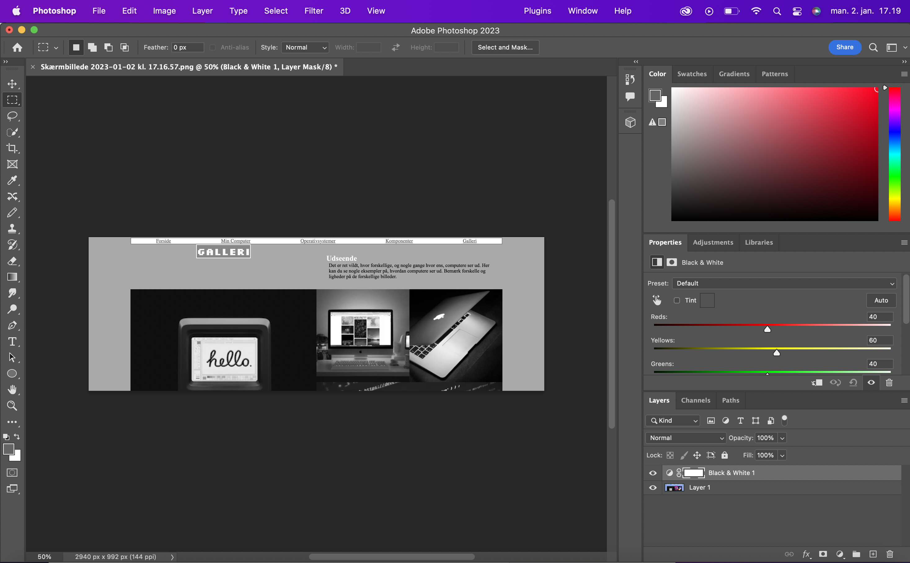
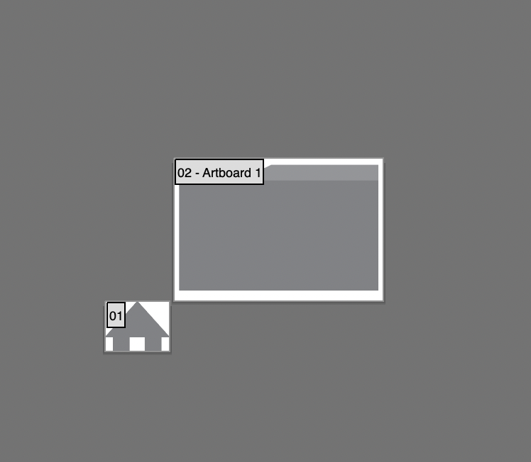
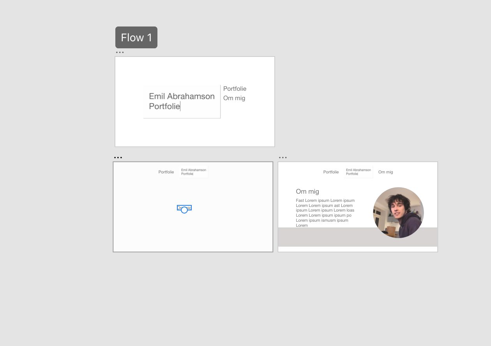
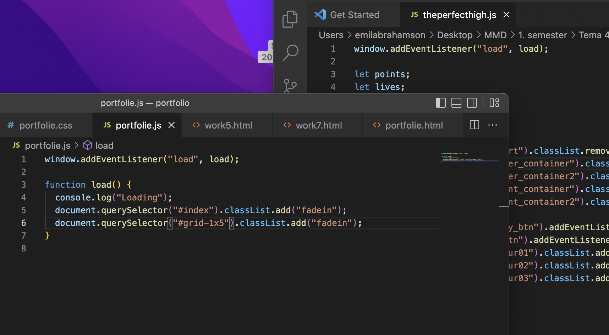

Tema 6 - Portfolio og eksamen
Det første jeg gjorde var at lave et wireframe, og begyndte at tænke på mit design i Adobe XD. Herefter begyndte jeg i Adobe Illustrator at tegne de små symboler jeg skulle bruge. Jeg begyndte så med html og css programmeringen hvor jeg efterlignede det design som jeg havde lavet i XD. Undervejs brugte jeg også photoshop til at putte filtre på mine billeder så de passede til den farvepalette jeg har valgt. Til sidst har jeg lavet en enkelt animation og lidt javascript for at give siden lidt liv.



